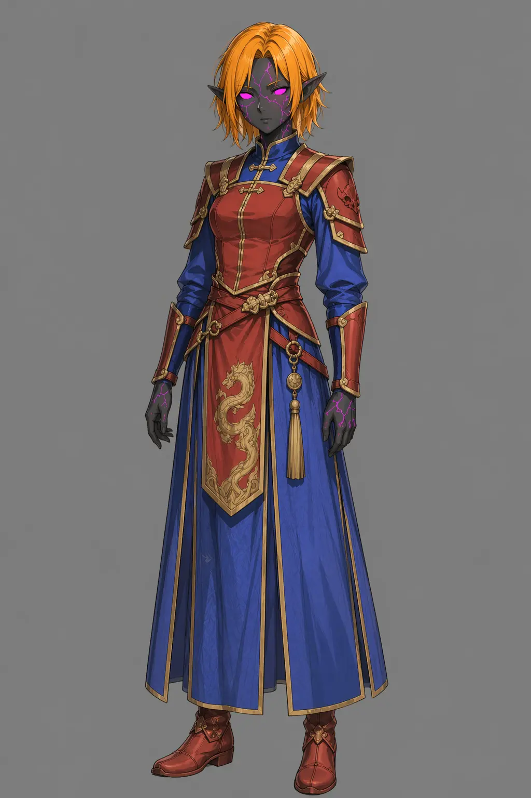

Pivotal Characters
The world is pushed forward by a million voices and twice that number of hands, yet how does one see through that many individual perspectives at once, when creating your own world? The simplest answer is that they don’t, but the reality of worldbuilding is more complicated than this. My method for resolving that issue is what I call “Pivotal Characters”.
These characters are in the epicenter (nodes of agency) of what I’m writing about in the current moment – they are often the reason while the things are happening right now. While the “great man” theory has been a hot topic in the general history discourse, that does not mean it is not useful for our purpose of building a compelling and detailed world – million forces may be pushing for something, but the tide has to take shape from somewhere and in my method this somewhere are these characters.
Building scenarios for pivotal characters
Sadly there is no drag and drop method for adding life to your worldbuilding, despite what some would like you to believe and as all the working methods this requires at least a bit of setup beforehand. Firstly you need a general social framework, no matter how simple it is for now – it will get easier and smoother as you go. This allows you to ground the characters in some kind of society, giving you your initial outline of who they are – do they conform or are they rather rebellious, etc.
Later as you build them you should have at least the outline of the forces, that act in your world – organizations, factions or however you like to call them. They shape the “grand theater” of the world stage and try to push the forces of the people to do their bidding and now you check your characters against them – what do they represent, how they fit (or don’t) in the current landscape of your setting.
When you have the general outline of who your character is and what they stand for, you can start going a little deeper and building both their past and future. Past is what made them this way and the reason they may be sticking to uncomfortable path, despite all the harsh conditions. The future on the other hand is what they want to achieve – where they want to turn the forces of history.
And now you may ask: “why we did all that work?”.
Reasons
This method allows us to quantize the world and the forces within it, as to make it easier for us to comprehend. A setting with million of individual actors may be more realistic, but is it feasible – I honestly don’t think so.
The method makes it easier to focus on what is important – not getting bogged down with the minor details that might as well not matter in a long run and stopping us from actually doing the world building by giving us paralysis when we try to take on the great monster that is worldbuilding and making it easier to digest.
Example
My example would be the center point of one of my major crisis in the setting – “Lian succession crisis” and the character of Yuki San Rei. Quick background – in my setting there is a certain kind of elves – star-plagued elves that were tainted by the magics of the otherworldly beast that tried to subjugate this world, after it was slain. They bring many rumors and much prejudice with themselves and Yuki is one of them.

While Yuki and her kin were young she was being raised alongside other noble families of Lian – an empire in the north. One of the people closest to her was a boisterous and secretive noble, who was Kin Sei Huon. They grew together and at some point fell in love, but after the last emperor has perished Kin was summoned, as the heir to the Lian Throne.
Many people displeased with his choice harped on his relation with Yuki right away, as a token of bad luck and even a curse, forcing the Kin out and forcing his younger sister to take the throne upon herself. After this disgrace where she was being blamed for a potential fall of the empire, she decided to leave and see the world engaging in many movements across the way and cataloging many wonders and peoples of Sain, which I’ve used as a diegetic way to show and explain the world to my players.